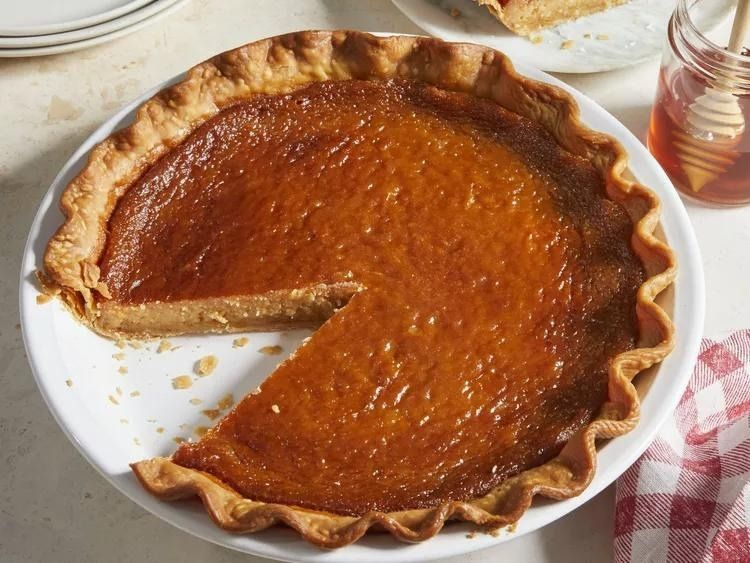

THAT'S HOW YOU MAKE A HONEY PIE

All the ingredients we're gonna need:
- 1/2 package refrigerated pie crusts, at room temperature
- 1/2 cup unsalted butter, melted
- 1/4 cup white sugar
- 1/4 cup packed light brown sugar
- 1 tablespoon cornstarch
- 1 teaspoon vanilla extract
- 3/4 teaspoon kosher salt
- 1/4 teaspoon almond extract
- 2/3 cup honey
- 3 large eggs
- 1 1/2 teaspoons fresh lemon juice
- 1 1/3 cups heavy cream, divided
- 1 teaspoon white sugar
Directions:
- Preheat oven to 400 degrees F (200 degrees C) with a rack in the middle
of the oven. Place a medium bowl in the freezer to chill.
- Fit pie crust dough into a 9-inch pie plate. Fold edges under and crimp
as desired. Place a piece of parchment paper onto the pie dough and fill with pie weights.
- Bake in the preheated oven until crust is just starting to set, about 18 minutes.
Remove pie from oven, and remove parchment with beans from the pie. Set aside to cool
slightly while preparing the filling. Reduce oven temperature to 375 degrees F (190 degrees C).
- Whisk together butter, 1/4 cup white sugar, brown sugar, cornstarch, vanilla, salt, and almond extract in a large bowl.
Add honey and whisk until completely smooth. Add eggs, 1 at a time, and whisk until each is completely incorporated before adding the next.
Whisk in lemon juice and 2/3 cup heavy cream. Pour filling into pie crust, and place in the middle rack of the oven.
- Bake in the preheated oven until browned and set, but still slightly jiggly in the center, about 1 hour,
shielding pie with aluminum foil around 25 minutes to keep it from getting too dark. Remove from oven,
and transfer to a wire rack to cool completely, about 2 hours. Refrigerate until ready to serve or serve at room temperature.
- While pie cools, combine remaining 2/3 cup cream and remaining 1 teaspoon white sugar in the chilled bowl from the freezer.
Whisk with a handheld electric mixer or manually with a whisk until soft peaks form and cream has almost doubled in size.
Refrigerate until ready to use.
- When ready to serve, slice pie and serve with whipped cream.
Preparation time: 20 minutes.
Cook time: 1 hour and 20 minutes
Additional time: 2 hours
Total time: 3 hours and 40 minutes
Servings: 8
Yield: one 9-inch pie
Source of that recipe
Here is this awesome Beatles song